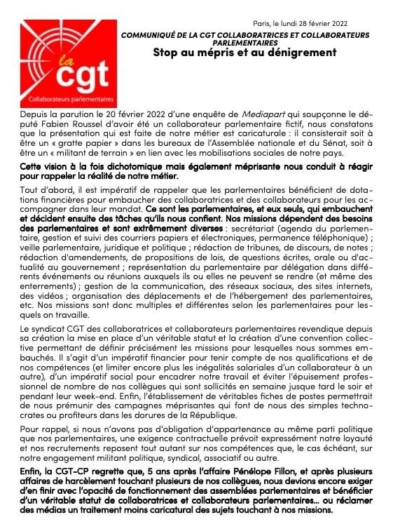

Publication sur X
Présidentielle 2022. Une réaction à l’affaire dite « RousselGate »
Date de publication sur X · 28 février 2022
Repères éditoriaux
Le message est accompagné d’un communiqué du Syndicat national des journalistes CGT.
Texte de la publication sur X
#Roussel et non #RousselGate https://t.co/sIWSA9qozm

Sources
PCF 79 · @79Parti sur X · AR-0005-TW-1498353828156039172
À lire aussi · Sénatoriales 2026. Le PCF 79 présente Frédéric Giraud et Valérie Mazé